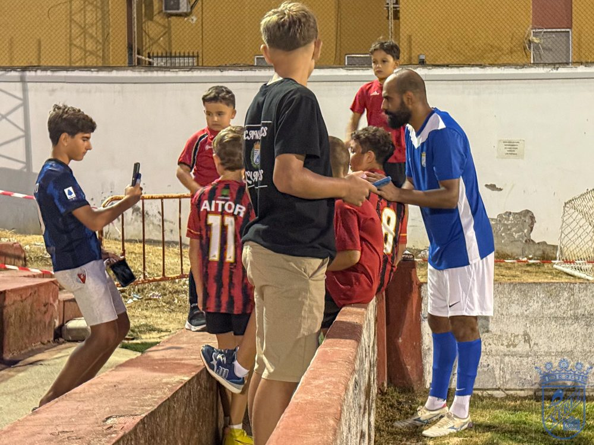

Fali se rompe el cuerno del menisco de la rodilla derecha y estará de baja entre ocho y doce semanas

Foto: Diario XerecistaEl central del Xerez CD será operado en los próximos días y podría perderse entre seis y diez partidos de liga, en plena racha de cinco victorias consecutivas del equipo.
Fali sufre una rotura del cuerno del menisco de la rodilla derecha. El central del Xerez CD será operado en los próximos días y estará de baja entre ocho y doce semanas.
El defensa valenciano, de 33 años, se lesionó en el último entrenamiento antes del partido ante el Atlético Central y se quedó fuera de la convocatoria. Tras el encuentro, Abel Segovia explicó que el jugador "notó algo" y que el cuerpo técnico no quiso arriesgar con él.
Rotura compleja del menisco externo
El parte médico del club, publicado el martes 24 de noviembre, precisa que Fali sufre una rotura compleja del cuerno posterior del menisco externo, que afecta a las dos superficies del menisco. Los servicios médicos del Xerez concretarán el tratamiento.
Cómo será la operación
En este tipo de lesiones, la decisión se toma cruzando la resonancia magnética con los objetivos de la temporada. A los 33 años, el menisco ya acumula cierto desgaste, pero el fútbol exige al máximo en giros, impactos y aceleraciones. Lo habitual es una artroscopia, bien para retirar solo la parte dañada del menisco (meniscectomía parcial), bien para coserlo (sutura), con el objetivo de preservar al máximo la rodilla y alargar la carrera del jugador sin comprometer su rendimiento.
Hasta mediados de enero o febrero
Con esos plazos, Fali podría volver entre mediados de enero y mediados de febrero. En el mejor de los casos se perdería los seis partidos que quedan hasta la jornada 18, ante el Estepona en Chapín. En el peor, la baja se alargaría hasta la jornada 22, en el campo del Don Benito.
Es un contratiempo importante para Segovia, que ha contado con Fali como uno de los fijos en el centro de la defensa. El técnico tiene otras opciones en la zona: como él mismo dijo el domingo, el equipo tiene "cuatro o cinco centrales". El Xerez recibe el domingo al Linares Deportivo, a las 18:00, con la baja segura de Fali y la de Chuma, aún pendiente de evolución.
🇬🇧 Read in English ← Volver a la portada